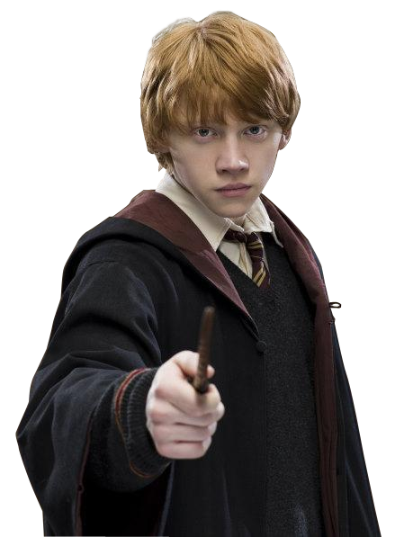

- Nome: Harry Tiago Potter
- Idade: 42 anos
- É mestiço: true
- Ocupação: Chefe da Seção dos Aurores, Palestrante convidado de Defesa Contra as Artes das Trevas, Chefe do Departamento de Execução das Leis da Magia

- Nome: Hermione Jean Granger
- Idade: 43 anos
- É mestiça: false
- Ocupação: Funcionária do Departamento para Regulamentação e Controle das Criaturas Mágicas, Vice-chefe do Departamento de Execução das Leis da Magia, Ministra da Magia

- Nome: Ronald Abílio Weasley
- Idade: 42
- É mestiço: false
- Ocupação: Chefe da Seção dos Aurores, Palestrante convidado de Defesa Contra as Artes das Trevas, Chefe do Departamento de Execução das Leis da Magia